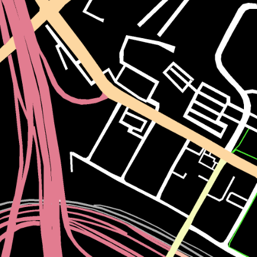
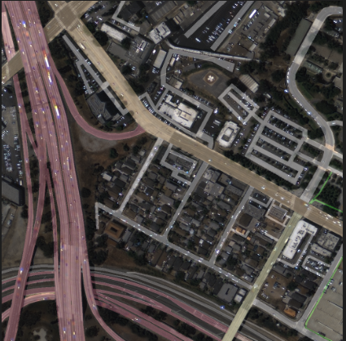
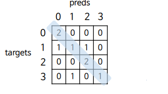
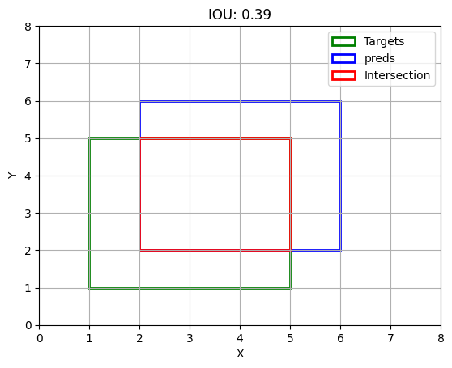
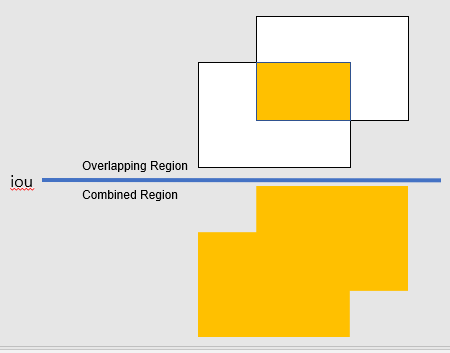

#Datasets
import torch
from pathlib import Path
import numpy as np
import cv2
import albumentations as A
from albumentations.pytorch import ToTensorV2
#Utils
import os
import cv2
import numpy as np
import torch
#ConfusionMatrix
import numpy as np
#Loss
import torch
import torch.nn.functional as F
#Train
import os
import argparse
import torch
import torch.optim as optim
import time
import wandb
from pathlib import Path
from torchvision import modelsThis is a post with executable code.
Imports
Dataset
class KariRoadDataset(torch.utils.data.Dataset):
def __init__(self, root, train=False):
self.root = Path(root)
self.train = train
if train:
self.img_dir = self.root/'train'/'images'
else:
self.img_dir = self.root/'val'/'images'
self.img_files = sorted(self.img_dir.glob('*.png'))
self.transform = get_transforms(train)
def __getitem__(self, idx):
img_file= self.img_files[idx].as_posix()
label_file = img_file.replace('images', 'labels')
img = cv2.imread(img_file)
label = cv2.imread(label_file, cv2.IMREAD_GRAYSCALE)
img, label = self.transform(img, label)
return img, label, img_file
def __len__(self):
return len(self.img_files)
class ImageAug:
def __init__(self, train):
if train:
self.aug = A.Compose([A.RandomCrop(256, 256),
A.HorizontalFlip(p=0.5),
A.ShiftScaleRotate(p=0.3),
A.RandomBrightnessContrast(p=0.3),
A.pytorch.transforms.ToTensorV2()])
else:
self.aug = ToTensorV2()
def __call__(self, img, label):
transformed = self.aug(image=img, mask=np.squeeze(label))
return transformed['image']/255.0, transformed['mask']
def get_transforms(train):
transforms = ImageAug(train)
return transformsdef __init__(self, root, train=False):
self.root = Path(root)
self.train = train
if train:
self.img_dir = self.root/'train'/'images'
else:
self.img_dir = self.root/'val'/'images'
self.img_files = sorted(self.img_dir.glob('*.png'))
self.transform = get_transforms(train)init 메소드는 클래스가 초기화될 때
학습 여부에 따라 데이터셋의 루트 경로와를 설정하고,
이 정보들을 클래스 내에서 사용할 수 있도록 준비합니다.
def __getitem__(self, idx):
img_file= self.img_files[idx].as_posix()
label_file = img_file.replace('images', 'labels')
img = cv2.imread(img_file)
label = cv2.imread(label_file, cv2.IMREAD_GRAYSCALE)
img, label = self.transform(img, label)
return img, label, img_file def __len__(self):
return len(self.img_files)def __init__(self, train):
if train:
self.aug = A.Compose([A.RandomCrop(256, 256),
A.HorizontalFlip(p=0.5),
A.ShiftScaleRotate(p=0.3),
A.RandomBrightnessContrast(p=0.3),
A.pytorch.transforms.ToTensorV2()])
else:
self.aug = ToTensorV2()def __call__(self, img, label):
transformed = self.aug(image=img, mask=np.squeeze(label))
return transformed['image']/255.0, transformed['mask']def get_transforms(train):
transforms = ImageAug(train)
return transformsUtils
def make_color_label(label):
h, w = label.shape
color_label = np.zeros((h, w, 3), dtype=np.uint8) # (H, W, 3) shape
colors = [
[0, 0, 0], # 0: background 배경 (검은색)
[144, 124, 226], # 1: motorway 고속도로 (보라색)
[172, 192, 251], # 2: trunk 간선도로 (연한 파란색)
[161, 215, 253], # 3: primary 주요도로 (연한 하늘색)
[187, 250, 246], # 4: secondary 부차적인 도로 (연한 민트색)
[255, 255, 255], # 5: tertiary 3차 도로 (흰색)
[49, 238, 75], # 6: path 경로 (녹색)
[173, 173, 173], # 7: under construction 건설 중 (회색)
[255, 85, 170], # 8: train guideway 기차 안내로 (분홍색)
[234, 232, 120] # 9: airplay runway 비행기 활주로 (노란색)
]
for i in range(10):
color_label[label == i] = colors[i]
return color_label
def plot_image(img, label=None, save_file='image.png', alpha=0.3):
# if img is tensor, convert to cv2 image
if torch.is_tensor(img):
img = img.mul(255.0).cpu().numpy().transpose(1, 2, 0).astype(np.uint8)
if label is not None:
# if label_img is tensor, convert to cv2 image
if torch.is_tensor(label):
label = label.cpu().numpy().astype(np.uint8)
color_label = make_color_label(label)
label = color_label
else:
color_label = make_color_label(label)
label = color_label
# overlay images
img = cv2.addWeighted(img, 1.0, label, alpha, 0)
# save image
cv2.imwrite(save_file, img)label의 데이터를 보면 1024*1024 사이즈의 검정사진이다.
2D 데이터라 눈으로 보이지 않지만 사진안에는 0~9의 데이터로 사진이 구성되어있다. 각 숫자에 맞게 색을 칠해 3D 컬러이미지로 변환하면 오른쪽과 같은 그림이 된다. tip 이 함수는 시각화를 위해 작성된 함수이고 학습에는 필수적인 함수는 아니다.
라벨의 h(높이)와 w(너비)를 가져온뒤 h,w,3의 0으로된 넌파이 어레이를 만든다.
0부터 9 순서대로 색을 칠한다. 색 종류는 colors와 같이 칠한다.

- 입력 이미지가 텐서 형식인 경우 numpy 배열로 변환.
- 레이블이 주어진 경우 이를 컬러 이미지로 변환.
- 원본 이미지와 레이블 이미지를 오버레이.
- 최종 이미지를 파일로 저장.

<사용된 핵심함수>
cv2.addWeighted(src1, alpha, src2, beta, gamma)src1: 첫 번째 입력 이미지.
alpha: 첫 번째 이미지의 가중치.
src2: 두 번째 입력 이미지.
beta: 두 번째 이미지의 가중치.
gamma: 결과 이미지에 더할 가중치 값ConfusionMatrix
class ConfusionMatrix:
def __init__(self, num_classes):
self.num_classes = num_classes
self.confusion_matrix = np.zeros((num_classes, num_classes))
def process_batch(self, preds, targets):
targets = targets.cpu().numpy().flatten()
preds = preds.argmax(1).cpu().numpy().flatten()
mask = (targets >= 0) & (targets < self.num_classes)
confusion_mtx = np.bincount(
self.num_classes * targets[mask].astype(int) + preds[mask],
minlength=self.num_classes ** 2)
confusion_mtx = confusion_mtx.reshape(self.num_classes, self.num_classes)
self.confusion_matrix += confusion_mtx
return confusion_mtx
def print(self):
for i in range(self.num_classes):
print(f"Class{i}:{self.confusion_matrix[i,i]} / {self.confusion_matrix[i].sum()}")
def get_pix_acc(self):
return np.diag(self.confusion_matrix).sum() / self.confusion_matrix.sum()
def get_class_acc(self):
class_acc = np.diag(self.confusion_matrix) / self.confusion_matrix.sum(axis=1)
return np.nanmean(class_acc),class_acc
def get_iou(self):
divisor = self.confusion_matrix.sum(axis=1)\
+ self.confusion_matrix.sum(axis=0)\
- np.diag(self.confusion_matrix)
iou = np.diag(self.confusion_matrix) / divisor
return iou
def get_mean_iou(self):
iou = self.get_iou()
return np.nansum(iou) / self.num_classes
def __init__(self, num_classes):
self.num_classes = num_classes
self.confusion_matrix = np.zeros((num_classes, num_classes))init 메소드는
클래스가 초기화될 때 클래스 내에서 사용할 수 있도록 준비물을 준비하는 단계입니다.
예시 상황
class의 수를 4이라고 했을때, 0으로 구성된 4by4행렬이 준비된다.def process_batch(self, preds, targets):
targets = targets.cpu().numpy().flatten()
preds = preds.argmax(1).cpu().numpy().flatten()
mask = (targets >= 0) & (targets < self.num_classes)
confusion_mtx = np.bincount(
self.num_classes * targets[mask].astype(int) + preds[mask],
minlength=self.num_classes ** 2)
confusion_mtx = confusion_mtx.reshape(self.num_classes, self.num_classes)
self.confusion_matrix += confusion_mtx[설명]

mask는 사진에서 설정한 클래스(여기서는 4로 설정했으니깐 0~3) 값인 것만 남기고,
그 외의 값은 제외하는 역할을 한다.
갯수의 결과가 [2, 0, 0, 0, 1, 1, 1, 0, 0, 0, 2, 0, 0, 1, 0, 1] 이렇게 나온다.
tip. minlength는 인덱스의 범위를 나타냄 이 식에서는 4x4 표를 만들것이기 때문에 4**2f로 설정

def print(self):
for i in range(self.num_classes):
print(f"Class{i}:
{self.confusion_matrix[i,i]} / {self.confusion_matrix[i].sum()}")각 클래스별 accuracy를 표현
Class0:2.0 / 2.0 <=정답0 2개 중 2개를 맞췄어
Class1:1.0 / 3.0 <=정답1 3개 중 1개를 맞췄어
Class2:2.0 / 2.0 <=정답1 2개 중 2개를 맞췄어
Class3:1.0 / 2.0 <=정답1 2개 중 1개를 맞췄어def get_pix_acc(self):
return np.diag(self.confusion_matrix).sum() / self.confusion_matrix.sum()get_pix_acc 메서드는 픽셀 정확도(Pixel Accuracy)를 계산하는 역할
픽셀 정확도는 이미지 분할이나 분류 작업에서 예측된 픽셀이 실제 값과 일치하는 비율
get_pix_acc답 : 6/9
def get_class_acc(self):
class_acc =np.diag(self.confusion_matrix) / self.confusion_matrix.sum(axis=1)
return np.nanmean(class_acc),class_acc도로 종류(클래스)가 비포장도로 국도 고속도로로 3개의 클래스가 있다고 하자 도심에서 도로탐지를 한 뒤 평가하려고 하면 도시에 비포장도로가 없기에 accuracy를 구하면 비포장도로의 클래스는 0(Nan)값이 나오고 전체적 accuracy가 감소할 것이다. 이것을 방지하기 위해서 get_class_acc을 쓰는것이다. 방법은 np.nanmean()을 쓰면 된다.
def get_iou(self):
divisor = self.confusion_matrix.sum(axis=1)\
+ self.confusion_matrix.sum(axis=0)\
- np.diag(self.confusion_matrix)
iou = np.diag(self.confusion_matrix) / divisor
return iou각 클래스별 iou를 구하는 코드이다. 출력값은 다음과 같이 나온다.
>>IoU: [0.66666667 0.25 0.66666667 0.5 ]


IOU는 예측한 픽셀과 실제 픽셀간 겹침 정도를 평가하는 지표이다.
사람이 눈으로 평가하는 지표와 가장 유사한 지표이다.
주로 객체 인식 알고리즘의 정확도를 평가하는데 사용된다.
def get_mean_iou(self):
iou = self.get_iou()
return np.nansum(iou) / self.num_classesget_iou의 평균값이다.
사진에 포함되지 않은 클래스가 있을 경우 iou값이 Nan값으로 나오게 된다.
Nan값을 제거하고 정확한 평균 계산을 위해 np.nansum()으로 더해준다.
ex_targets=torch.Tensor([[[0,1,2],[3,2,1],[0,3,1]]])#shape=(1,3,3)=(batchsize,H,W)
ex_preds=torch.Tensor([[[[1,0,0],
[0,0,0],
[1,0,1]],
[[0,0,0],
[1,0,1],
[0,0,0]],
[[0,1,1],
[0,1,0],
[0,0,0]],
[[0,0,0],
[0,0,0],
[0,1,0]]]]) #shape=(1,4,3,3)=(batchsize,C,H,W)
# ConfusionMatrix 클래스 인스턴스화
num_classes = 4 # 0 ~ 10 사이의 숫자를 사용하므로 총 11개의 클래스
confusion_matrix = ConfusionMatrix(num_classes)
# 배치 처리
confusion_matrix.process_batch(ex_preds, ex_targets)
# 메트릭 출력
confusion_matrix.print()
print("process_batch:", confusion_matrix.process_batch(ex_preds, ex_targets))
print("Pixel Accuracy:", confusion_matrix.get_pix_acc())
print("Class Accuracy:", confusion_matrix.get_class_acc())
print("IoU:", confusion_matrix.get_iou())
print("Mean IoU:", confusion_matrix.get_mean_iou())결과
Class0:2.0 / 2.0 <=정답0 2개 중 2개를 맞췄어
Class1:1.0 / 3.0 <=정답1 3개 중 1개를 맞췄어
Class2:2.0 / 2.0 <=정답1 2개 중 2개를 맞췄어
Class3:1.0 / 2.0 <=정답1 2개 중 1개를 맞췄어
process_batch:
[[2 0 0 0]
[1 1 1 0]
[0 0 2 0]
[0 1 0 1]]
Pixel Accuracy: 0.6666
Class Accuracy: 0.7083
IoU: [0.66666667 0.25 0.66666667 0.5 ]
Mean IoU: 0.52083
Loss
def bce_loss(preds, targets, pos_weight=None):
bce_loss = F.binary_cross_entropy_with_logits(
preds.float(),
targets.float(),
pos_weight=pos_weight,
)
return bce_loss
def ce_loss(preds, targets, ignore=255):
ce_loss = F.cross_entropy(
preds.float(),
targets.long(), # [B, H, W]
ignore_index=ignore,
)
return ce_loss
def dice_loss(preds, targets, eps=1e-7):
num_classes = preds.shape[1]
true_1_hot = F.one_hot(targets.squeeze(1), num_classes=num_classes) # (B, 1, H, W) to (B, H, W, C)
true_1_hot = true_1_hot.permute(0, 3, 1, 2) # (B, H, W, C) to (B, C, H, W)
probas = F.softmax(preds, dim=1)
true_1_hot = true_1_hot.type(preds.type()).contiguous()
dims = (0,) + tuple(range(2, targets.ndimension())) # dims = (0, 2, 3)
intersection = torch.sum(probas * true_1_hot, dims) # intersection w.r.t. the class
cardinality = torch.sum(probas + true_1_hot, dims) # cardinality w.r.t. the class
dice_loss = (2. * intersection / (cardinality + eps)).mean()
return (1 - dice_loss)
def jaccard_loss(preds, targets, eps=1e-7):
"""Computes the Jaccard loss.
Args:
preds(logits) a tensor of shape [B, C, H, W]
targets: a tensor of shape [B, 1, H, W].
eps: added to the denominator for numerical stability.
Returns:
Jaccard loss
"""
num_classes = preds.shape[1]
true_1_hot = F.one_hot(targets.squeeze(1), num_classes=num_classes) # (B, 1, H, W) to (B, H, W, C)
true_1_hot = true_1_hot.permute(0, 3, 1, 2) # (B, H, W, C) to (B, C, H, W)
probas = F.softmax(preds, dim=1)
true_1_hot = true_1_hot.type(preds.type()).contiguous()
dims = (0,) + tuple(range(2, targets.ndimension()))
intersection = torch.sum(probas * true_1_hot, dims)
cardinality = torch.sum(probas + true_1_hot, dims)
union = cardinality - intersection
jacc_loss = (intersection / (union + eps)).mean()
return (1 - jacc_loss)가중치가 적용된 이진 교차 엔트로피 손실을 계산
Args:
targets: [B, 1, H, W] 형태의 텐서. 실제 값 (레이블).
preds: [B, 1, H, W] 형태의 텐서. 모델의 예측 값.
pos_weight: 양성 클래스에 대한 가중치 (선택 사항).
Returns:
bce_loss: 가중치가 적용된 이진 교차 엔트로피 손실.- N: 데이터의 수
- y𝑖𝑐 : 실제 레이블 (0 또는 1)
- p𝑖𝑐 : 모델이 예측한 클래스 1에 속할 확률
목적: BCE의 주된 목적은 이진 분류 모델의 예측값 𝑝𝑖가 실제 레이블 𝑦𝑖와 얼마나 잘 일치하는지를 측정하는 것입니다. 이 손실 함수는 예측값과 실제 레이블 간의 차이를 최소화하도록 모델을 학습시킵니다.
손실 계산: BCE는 각 데이터 포인트에 대해 예측값 𝑝𝑖가 실제 레이블 𝑦𝑖와 얼마나 비슷한지를 측정합니다. 예측값이 실제 레이블과 정확히 일치할 때 손실은 0이 되고, 그렇지 않으면 손실이 증가합니다. 이를 통해 모델이 더 정확한 예측을 하도록 유도합니다.
확률적 해석: BCE는 각 예측값 𝑝𝑖을 클래스 1에 속할 확률로 해석하며, 이를 로그 함수를 통해 손실을 계산합니다. 따라서 모델은 클래스 1에 속할 확률을 정확히 예측하도록 학습됩니다.
최적화: BCE는 일반적으로 이진 분류 모델의 손실 함수로 사용되며, 경사 하강법을 통해 모델의 가중치를 조정하여 손실을 최소화하도록 합니다. 이를 통해 모델이 데이터의 패턴을 학습하고, 새로운 데이터에 대해 정확한 예측을 할 수 있도록 합니다.
가중치가 적용된 다중 클래스 교차 엔트로피 손실을 계산
Args:
targets: [B, H, W] 형태의 텐서. 실제 값 (레이블).
preds: [B, C, H, W] 형태의 텐서. 모델의 예측 값.
ignore: 무시할 클래스 인덱스.
Returns:
ce_loss: 가중치가 적용된 다중 클래스 교차 엔트로피 손실.- N: 데이터의 수
- C: 클래스의 수
- y𝑖𝑐 : 데이터 포인트 i의 실제 클래스 𝑐에 대한 one-hot 인코딩된 레이블 (0 또는 1)
- p𝑖𝑐 : 모델이 예측한 데이터 포인트 𝑖가 클래스 c에 속할 확률
목적: CE 손실 함수는 다중 클래스 분류 모델에서 예측값 pic가 실제 레이블yic와 얼마나 일치하는지를 측정합니다. 모델이 다양한 클래스를 분류하고, 각 클래스에 속할 확률을 정확하게 예측하도록 학습시키는 데 사용됩니다.
손실 계산: 각 데이터 포인트에 대해 CE는 각 클래스에 대해 예측된 확률 pic가 실제 레이블 yic 사이의 교차 엔트로피를 계산하여 전체 데이터셋에 대한 평균 손실을 계산합니다. 이 손실은 모델이 예측을 향상시키고, 다양한 클래스 간의 결정 경계를 명확하게 만들도록 돕습니다.
확률적 해석: CE 손실 함수는 예측된 확률 pic을 클래스 c에 속할 확률로 해석하며, 이를 로그 함수를 통해 손실을 계산합니다. 따라서 모델은 각 데이터 포인트가 각 클래스에 속할 가능성을 정확히 예측하도록 학습됩니다.
최적화: CE 손실 함수는 다중 클래스 분류 문제에서 모델을 훈련시키는 데 주로 사용됩니다. 경사 하강법을 통해 모델의 가중치를 조정하여 CE 손실을 최소화하도록 하여 모델의 성능을 향상시킵니다.
Sørensen–Dice 손실을 계산합니다.
Args:
preds(logits): [B, C, H, W] 형태의 텐서. 모델의 예측 값 (로짓).
targets: [B, 1, H, W] 형태의 텐서. 실제 값 (레이블).
eps: 분모에 더해지는 작은 값으로, 수치적 안정성을 위해 사용됩니다.
Returns:
dice_loss: Sørensen–Dice 손실 값.∣P∩T∣: 예측된 세그멘테이션 영역 P과 실제 타겟 세그멘테이션 영역 T의 교집합의 크기입니다.
∣P∣: 예측된 세그멘테이션 영역 P의 크기 또는 원소 수입니다.
∣T∣: 실제 타겟 세그멘테이션 영역 T의 크기 또는 원소 수입니다.
목적: Dice 계수는 두 세그멘테이션 영역의 중첩 정도를 측정하여 예측된 세그멘테이션 𝑃이 실제 타겟 세그멘테이션 T과 얼마나 일치하는지를 평가합니다. 이 지표는 0에서 1 사이의 값을 가지며, 1에 가까울수록 두 영역이 완전히 일치함을 나타냅니다.
계산 방법: Dice 계수의 분자 2×∣𝑃∩𝑇∣는 예측된 영역과 실제 타겟 영역의 교집합의 크기를 두 배로 확장하여, under-segmentation과 over-segmentation을 모두 공평하게 패널티를 줍니다. 분모 ∣P∣+∣T∣는 두 영역의 크기 합으로 정규화하여 계수가 [0, 1] 범위 내에 유지되도록 합니다.
응용: Dice 계수는 주로 의료 이미지 분석 및 다양한 영상 처리 애플리케이션에서 사용됩니다. 이미지 세분화 알고리즘의 정확도를 평가하고, 예측된 세그멘테이션의 질을 비교하는 데 중요한 지표 역할을 합니다.
Jaccard 손실을 계산합니다.
인수:
preds(logits): 형상이 [B, C, H, W]인 텐서
targets: 형상이 [B, 1, H, W]인 텐서
eps: 수치 안정성을 위해 분모에 추가되는 작은 값
반환:
Jaccard 손실- ∣P∩T∣: 예측된 영역 𝑃과 실제 타겟 영역 𝑇의 교집합의 크기
- ∣P∪T∣: 예측된 영역 𝑃과 실제 타겟 영역 𝑇의 합집합의 크기
목적: Jaccard 지수는 두 세그멘테이션 영역의 중첩 정도를 측정하여 예측된 세그멘테이 P이 실제 타겟 세그멘테이션 T과 얼마나 일치하는지를 평가합니다. 이 지표는 0에서 1 사이의 값을 가지며, 1에 가까울수록 두 영역이 완전히 일치함을 나타냅니다.
계산 방법: Jaccard 지수는 예측된 영역 𝑃과 실제 타겟 영역 𝑇의 교집합 크기를 두 영역의 합집합 크기로 나누어 계산합니다. 이는 두 영역이 얼마나 겹치는지를 평가하며, 분자는 교집합의 크기를 나타내고 분모는 전체적인 예측된 영역과 실제 타겟 영역의 크기를 반영합니다.
응용: Jaccard 지수는 주로 이미지 세분화의 성능을 평가하는 데 사용됩니다. 다양한 이미지 처리 및 패턴 인식 문제에서 유사성을 비교하고 모델의 정확도를 평가하는 데 중요한 지표로 활용됩니다.
one_epoch( train, val )
def train_one_epoch(train_dataloader, model, optimizer, device):
model.train()
losses = []
for i, (imgs, targets, _) in enumerate(train_dataloader):
imgs, targets = imgs.to(device), targets.to(device)
preds = model(imgs)['out'] # forward
loss = ce_loss(preds, targets) # calculates the iteration loss
optimizer.zero_grad() # zeros the parameter gradients
loss.backward() # backward
optimizer.step() # update weights
print('\t iteration: %d/%d, loss=%.4f' % (i, len(train_dataloader)-1, loss))
losses.append(loss.item())
return torch.tensor(losses).mean().item()
def val_one_epoch(val_dataloader, model, confusion_matrix, device):
model.eval()
losses = []
for i, (imgs, targets, img_file) in enumerate(val_dataloader):
imgs, targets = imgs.to(device), targets.to(device)
with torch.no_grad():
preds = model(imgs)['out'] # forward, preds: (B, 2, H, W)
loss = ce_loss(preds, targets)
losses.append(loss.item())
confusion_matrix.process_batch(preds, targets)
# sample images
if i == 0:
preds = torch.argmax(preds, axis=1) # (1, H, W)
for j in range(3):
save_file = os.path.join('outputs', 'val_%d.png' % (j))
plot_image(imgs[j], preds[j], save_file)
avg_loss = torch.tensor(losses).mean().item()
return avg_loss1) def train_one_epoch(train_dataloader, model, optimizer, device)이라는
함수는 파라미터가 4개이다.
2) model.train()은 학습모드인것을 나타낸다.
3) losses = []는 train의 loss값을 저장하기 위함이다.
4) 반복문(for)의 i 는 enumerate함수에서 만들어진(인덱싱된) 0부터 n까지의
숫자이고 (imgs, targets, _)는 각각 imgs는 위성사진 targets는 정답라벨이다.
5) device를 통해 cpu에서 gpu로 이동시키는 과정으로 device는 뒤에서 정의할 것이다.
6) model에 img를 집어넣어 preds를 예측해본다. 이때 [out]이 붙는 이유는
torchvision에 저장되어 있는 deeplabv3모델을 사용할때의 방식이다.
7) loss는 앞에서 정의해준 로스 중 ce_loss를 사용했다.
이때 preds가 먼저 들어가야하는 점을 주의하자
8) optimizer.zero는 loss의 미분값을 계산하기전 0으로 초기화하는 과정이다.
9) loss.backward()는 loss값을 편미분하는 과정이다.
편미분은 2차원 공간에서 미분을 한 번에 못하니깐
순차적으로 미분하는 과정이라고 생각하면 된다.
10) 미분한 값을 모델의 파라미터값에 반영한다(미분값을 빼주는과정).
11) iteration별 train loss를 표시해준다.
12) loss를 losses에 저장한다.
13) return을 통해 함수 밖에서도 losses의 평균을 호출 할 수 있게한다.1) def val_one_epoch(val_dataloader, model, confusion_matrix, device)이라는
함수는 파라미터가 4개이다.
2) model.eval()은 학습모드인것을 나타낸다.
3) losses = []는 validation의 loss값을 저장하기 위함이다.
4) 반복문(for)의 i 는 enumerate함수에서 만들어진(인덱싱된) 0부터 n까지의
숫자이고 (imgs, targets, _)는 각각 imgs는 위성사진 targets는 정답라벨이다.
5) device를 통해 cpu에서 gpu로 이동시키는 과정으로 device는 뒤에서 정의할 것이다.
6) model에 img를 집어넣어 preds를 예측해본다. 이때 [out]이 붙는 이유는
torchvision에 저장되어 있는 deeplabv3모델을 사용할때의 방식이다.
7) loss는 앞에서 정의해준 로스 중 ce_loss를 사용했다.
이때 preds가 먼저 들어가야하는 점을 주의하자
8) loss를 losses에 저장한다.
9) 이후에 ConfusionMatrix를 이용해 confusion_matrix라는 인스턴스를 만들게
되는데 만들어진 인스턴스에 모델이 예측한 preds와 정답지 targets을 넣어주면
행렬이 계산이 돼서 아래와 같이 사용가능하다. val_epoch_iou = confusion_matrix.get_iou()
val_epoch_mean_iou = confusion_matrix.get_mean_iou()
val_epoch_pix_accuracy = confusion_matrix.get_pix_acc()
12) ~ 16) i=0일때(epoch이 새로 시작될때)마다 plot_image 함수를 이용해
img에 preds를 오버레이해서 사진으로 저장한다.(총 3장 저장한다.)
추가로 저장된 사진은 이름이 val_0(1,2).png으로 매 에폭마다 사진이 바뀐다.
따로 저장하려면 수정필요
17~) return을 통해 함수 밖에서도 validation losses의 평균을 호출 할 수 있게한다.Train
#def train______________________________________________________#
def train(epochs=200, batch_size = 8 , name = 'suwany'):
#1______________________________________________________________#
# wandb settings
wandb.init(id=name, resume='allow', mode='disabled')
wandb.config.update({
'epochs': epochs,
'batch_size': batch_size,
'name': name
})
#2______________________________________________________________#
# Train dataset
train_dataset = KariRoadDataset('./data/kari-road', train=True)
# Train dataloader
num_workers = min([os.cpu_count(), batch_size, 16])
train_dataloader = torch.utils.data.DataLoader(train_dataset, batch_size=batch_size,
shuffle=True, num_workers=num_workers, pin_memory=True, drop_last=False)
# Validation dataset
val_dataset = KariRoadDataset('./data/kari-road', train=False)
val_dataloader = torch.utils.data.DataLoader(val_dataset, batch_size=batch_size,
shuffle=True, num_workers=num_workers, pin_memory=True, drop_last=False)
#3______________________________________________________________#
# Network model
num_classes = 10 # background + 1 classes
model = models.segmentation.deeplabv3_resnet101(num_classes=num_classes)
# GPU-support
device = torch.device("cuda" if torch.cuda.is_available() else "cpu")
if torch.cuda.device_count() > 1: # multi-GPU
model = torch.nn.DataParallel(model)
model.to(device)
#______________________________________________________________#
# Optimizer
optimizer = optim.Adam(model.parameters(), lr=3e-4)
# Learning rate scheduler
lr_scheduler = torch.optim.lr_scheduler.ReduceLROnPlateau(optimizer, mode='min', factor=0.5, patience=5)
#______________________________________________________________#
# loading a weight file (if exists)
weight_file = Path('weights')/(name + '.pth')
best_accuracy = 0.0
start_epoch, end_epoch = (0, epochs)
if os.path.exists(weight_file):
checkpoint = torch.load(weight_file)
model.load_state_dict(checkpoint['model'])
start_epoch = checkpoint['epoch'] + 1
best_accuracy = checkpoint['best_accuracy']
print('resumed from epoch %d' % start_epoch)
#______________________________________________________________#
confusion_matrix = ConfusionMatrix(num_classes)
# training/validation
for epoch in range(start_epoch, end_epoch):
print('epoch: %d/%d' % (epoch, end_epoch-1))
t0 = time.time()
# training
epoch_loss = train_one_epoch(train_dataloader, model, optimizer, device)
t1 = time.time()
print('loss=%.4f (took %.2f sec)' % (epoch_loss, t1-t0))
lr_scheduler.step(epoch_loss)
# validation
val_epoch_loss = val_one_epoch(val_dataloader, model, confusion_matrix, device)
val_epoch_iou = confusion_matrix.get_iou()
val_epoch_mean_iou = confusion_matrix.get_mean_iou()
val_epoch_pix_accuracy = confusion_matrix.get_pix_acc()
print('[validation] loss=%.4f, mean iou=%.4f, pixel accuracy=%.4f' %
(val_epoch_loss, val_epoch_mean_iou, val_epoch_pix_accuracy))
print('class IoU: [' + ', '.join([('%.4f' % (x)) for x in val_epoch_iou]) + ']')
# saving the best status into a weight file
if val_epoch_pix_accuracy > best_accuracy:
best_weight_file = Path('weights')/(name + '_best.pth')
best_accuracy = val_epoch_pix_accuracy
state = {'model': model.state_dict(), 'epoch': epoch, 'best_accuracy': best_accuracy}
torch.save(state, best_weight_file)
print('best accuracy=>saved\n')
# saving the current status into a weight file
state = {'model': model.state_dict(), 'epoch': epoch, 'best_accuracy': best_accuracy}
torch.save(state, weight_file)
# wandb logging
wandb.log({'train_loss': epoch_loss, 'val_loss': val_epoch_loss, 'val_accuracy': val_epoch_pix_accuracy})
#______________________________________________________________# 이 함수는 지금까지 정의한 함수들을 이용함, 주어진 하이퍼파라미터 설정을 기반으로 모델을 학습하고 검증하는 과정을 포함되어있다. 또한, 모델의 상태를 저장하고, WandB(Weights and Biases)를 사용하여 로그를 기록한다.
def train(epochs=200, batch_size = 8 , name = 'suwany'):
- epochs: 학습할 총 에포크 수입니다. 기본값은 200입니다.
- batch_size: 미니배치의 크기입니다. 기본값은 8입니다.
- name: 실험 이름입니다. 기본값은 ’suwany’입니다.
wandb.init(id=name, resume='allow', mode='disabled')
wandb.config.update({
'epochs': epochs,
'batch_size': batch_size,
'name': name
})- WandB를 초기화하고 설정을 업데이트합니다. 이로 인해 실험의 하이퍼파라미터가 기록됩니다
# Train dataset
train_dataset = KariRoadDataset('./data/kari-road', train=True)
# Train dataloader
num_workers = min([os.cpu_count(), batch_size, 16])
train_dataloader = torch.utils.data.DataLoader(train_dataset, batch_size=batch_size,
shuffle=True, num_workers=num_workers, pin_memory=True, drop_last=False)
# Validation dataset
val_dataset = KariRoadDataset('./data/kari-road', train=False)
val_dataloader = torch.utils.data.DataLoader(val_dataset, batch_size=batch_size,
shuffle=True, num_workers=num_workers, pin_memory=True, drop_last=False)
- KariRoadDataset 클래스를 사용하여 학습 및 검증 데이터셋을 초기화합니다.
- 각 데이터셋에 대해 데이터로더를 생성하여 데이터를 배치 단위로 로드합니다.
- num_workers는 데이터 로딩을 위한 CPU 스레드 수를 설정합니다.
num_classes = 10 # background + 9 classes
model = models.segmentation.deeplabv3_resnet101(num_classes=num_classes)
# GPU-support
device = torch.device("cuda" if torch.cuda.is_available() else "cpu")
if torch.cuda.device_count() > 1: # multi-GPU
model = torch.nn.DataParallel(model)
model.to(device)- num_classes를 설정하여 모델의 클래스 수를 정의한다.
- 여기서는 road의 클래스 9개에 배경 1개를 추가한다.
- DeepLabV3 모델을 ResNet-101 백본을 사용하여 초기화했다.
- 모델을 GPU로 이동시키며, 여러 GPU를 사용할 경우 DataParallel을 사용하도록 했다.
# Optimizer
optimizer = optim.Adam(model.parameters(), lr=3e-4)
# Learning rate scheduler
lr_scheduler = torch.optim.lr_scheduler.ReduceLROnPlateau(optimizer, mode='min', factor=0.5, patience=5)
- Adam 옵티마이저를 설정하여 모델 파라미터를 최적화한다.
- 학습률 스케줄러는 검증 손실이 5회 이상 줄어들지 않을 때 학습률을 감소시키도록 설정했다.
weight_file = Path('weights')/(name + '.pth')
best_accuracy = 0.0
start_epoch, end_epoch = (0, epochs)
if os.path.exists(weight_file):
checkpoint = torch.load(weight_file)
model.load_state_dict(checkpoint['model'])
start_epoch = checkpoint['epoch'] + 1
best_accuracy = checkpoint['best_accuracy']
print('resumed from epoch %d' % start_epoch)
기존에 저장된 체크포인트 파일이 있으면 이를 로드하여 학습을 이어서 진행할 수 있다.
confusion_matrix = ConfusionMatrix(num_classes)
# training/validation
for epoch in range(start_epoch, end_epoch):
print('epoch: %d/%d' % (epoch, end_epoch-1))
t0 = time.time()
# training
epoch_loss = train_one_epoch(train_dataloader, model, optimizer, device)
t1 = time.time()
print('loss=%.4f (took %.2f sec)' % (epoch_loss, t1-t0))
lr_scheduler.step(epoch_loss)
# validation
val_epoch_loss = val_one_epoch(val_dataloader, model, confusion_matrix, device)
val_epoch_iou = confusion_matrix.get_iou()
val_epoch_mean_iou = confusion_matrix.get_mean_iou()
val_epoch_pix_accuracy = confusion_matrix.get_pix_acc()
print('[validation] loss=%.4f, mean iou=%.4f, pixel accuracy=%.4f' %
(val_epoch_loss, val_epoch_mean_iou, val_epoch_pix_accuracy))
print('class IoU: [' + ', '.join([('%.4f' % (x)) for x in val_epoch_iou]) + ']')
# saving the best status into a weight file
if val_epoch_pix_accuracy > best_accuracy:
best_weight_file = Path('weights')/(name + '_best.pth')
best_accuracy = val_epoch_pix_accuracy
state = {'model': model.state_dict(), 'epoch': epoch, 'best_accuracy': best_accuracy}
torch.save(state, best_weight_file)
print('best accuracy=>saved\n')
# saving the current status into a weight file
state = {'model': model.state_dict(), 'epoch': epoch, 'best_accuracy': best_accuracy}
torch.save(state, weight_file)
# wandb logging
wandb.log({'train_loss': epoch_loss, 'val_loss': val_epoch_loss, 'val_accuracy': val_epoch_pix_accuracy})
- for문을 이용해 각 에포크마다 학습 및 검증을 수행한다.
- train_one_epoch 함수는 한 에포크 동안 학습을 수행하며, 손실 값을 반환했다.
- 검증 단계에서는 val_one_epoch 함수를 통해 검증 손실, IoU, 평균 IoU, 픽셀 정확도를 계산한다.
- 최상의 모델 상태를 저장하며, 현재 상태도 에폭마다 저장되도록 했다.
- WandB를 사용하여 학습 및 검증 손실, 정확도를 로깅되어 기록된다.
실행 코드
train(epochs=200, batch_size = 8 , name = 'suwany')epoch: 0/199
iteration: 0/142, loss=2.2205
iteration: 1/142, loss=2.1528
iteration: 2/142, loss=2.1019
iteration: 3/142, loss=2.0039
iteration: 4/142, loss=1.9516
iteration: 5/142, loss=1.8579
iteration: 6/142, loss=1.8787--------------------------------------------------------------------------- KeyboardInterrupt Traceback (most recent call last) Cell In[25], line 1 ----> 1 train(epochs=200, batch_size = 8 , name = 'suwany') Cell In[15], line 58, in train(epochs, batch_size, name) 56 t0 = time.time() 57 # training ---> 58 epoch_loss = train_one_epoch(train_dataloader, model, optimizer, device) 59 t1 = time.time() 60 print('loss=%.4f (took %.2f sec)' % (epoch_loss, t1-t0)) Cell In[14], line 9, in train_one_epoch(train_dataloader, model, optimizer, device) 7 loss = ce_loss(preds, targets) # calculates the iteration loss 8 optimizer.zero_grad() # zeros the parameter gradients ----> 9 loss.backward() # backward 10 optimizer.step() # update weights 11 print('\t iteration: %d/%d, loss=%.4f' % (i, len(train_dataloader)-1, loss)) File ~/anaconda3/envs/gd/lib/python3.10/site-packages/torch/_tensor.py:396, in Tensor.backward(self, gradient, retain_graph, create_graph, inputs) 387 if has_torch_function_unary(self): 388 return handle_torch_function( 389 Tensor.backward, 390 (self,), (...) 394 create_graph=create_graph, 395 inputs=inputs) --> 396 torch.autograd.backward(self, gradient, retain_graph, create_graph, inputs=inputs) File ~/anaconda3/envs/gd/lib/python3.10/site-packages/torch/autograd/__init__.py:173, in backward(tensors, grad_tensors, retain_graph, create_graph, grad_variables, inputs) 168 retain_graph = create_graph 170 # The reason we repeat same the comment below is that 171 # some Python versions print out the first line of a multi-line function 172 # calls in the traceback and some print out the last line --> 173 Variable._execution_engine.run_backward( # Calls into the C++ engine to run the backward pass 174 tensors, grad_tensors_, retain_graph, create_graph, inputs, 175 allow_unreachable=True, accumulate_grad=True) KeyboardInterrupt:
학교
---
전북대학교 지구환경과학과
---이름
---
김수환
---